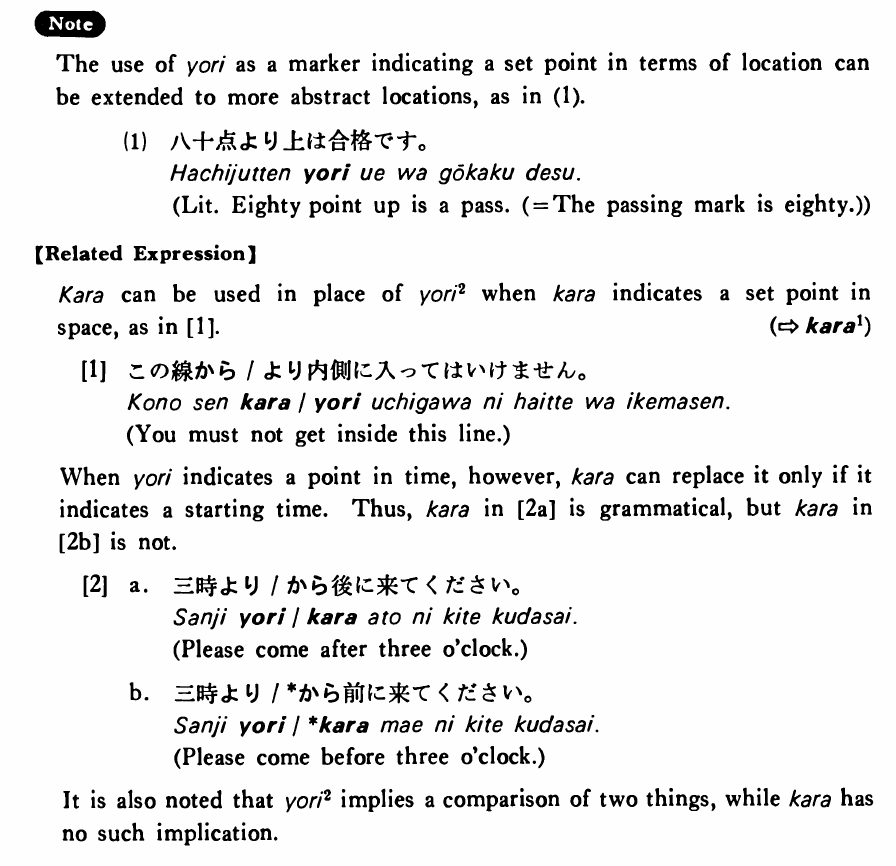

より (2) (B. 567)
- (ks).
- メキシコは赤道より北にある・あります。
- Mexico is located north of the equator.
- (a).
- この線より内側に入ってはいけません。
- You must not get inside this line.
- (b).
- 三時より前に来て下さい。
- Please come before three o'clock.
- (c).
- これより先はバスがありません。
- There's no bus service from here (beyond this point).
